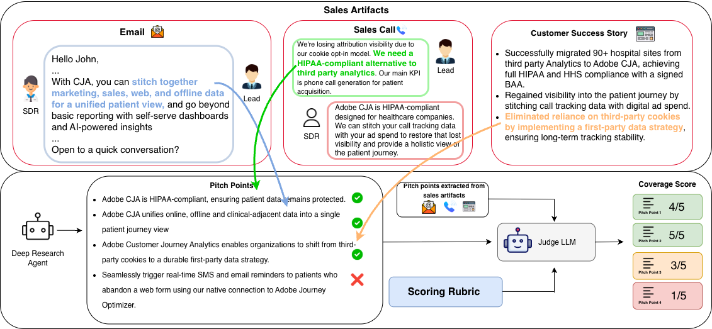
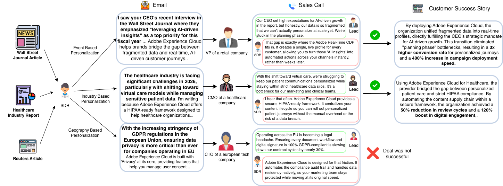

SDR-Bench: Benchmarking the Personalization Capabilities of Large Language Models
Get in touch with us at behavior-in-the-wild@googlegroups.com

Abstract
Personalization serves as the bridge between generic information and high-impact engagement, yet the manual effort required to craft tailored content has historically precluded its use at scale. The emergence of Large Language Models (LLMs) represents a paradigm shift toward "Generative Personalization at Scale", offering profound opportunities in domains such as marketing, sales, and education. While existing research has discussed the potential of generative AI for personalization, they have mostly relied on small scale human studies to present their findings, leaving it unproven whether LLM personalization has reached a level of maturity viable for high-stakes business operations or not. To address this substantial gap, we develop SDR-Arena - the first framework that enables a scalable way for automated personalization benchmarking. We adapt the Bayesian Persuasion model to formally define personalization. We select sales as our primary case study due to its direct economic utility and rigorously test our framework by curating a dual-layered dataset consisting of proprietary outreach emails sent by real sales people and public scale data comprising of 6,279 articles spanning over 20 industries. We benchmark the ability of frontier LLMs in translating these complex business contexts into personalized value propositions for individual prospects. We find that even though the current models demonstrate progress in personalization, a substantial gap remains before achieving the human-level proficiency required to reliably drive revenue. We publicly release our framework and datasets to facilitate reproducible research in autonomous personalization.
SDR-Leaderboard
Values reported as Coverage Percentage
| Model | Ground Truth Artifacts | Success Stories | |||||||||
|---|---|---|---|---|---|---|---|---|---|---|---|
| Healthcare (<1B) | Tech (>10B) | Other | Tech. | Mfg. | Energy | IT | Agg. | Subset | |||
| Unsucc (50) |
Succ (50) |
Unsucc (50) |
Succ (50) |
Sales Trans. | (30) | (30) | (30) | (30) | (180) | (25) | |
| STORM-QWEN-2.5 | 22.46 | 32.27 | 43.15 | 39.24 | 30.43 | 43.40 | 41.59 | 39.24 | 44.60 | 42.51 | 41.54 |
| ODR-QWEN-2.5 | 15.40 | 30.41 | 38.51 | 39.82 | 22.55 | 30.16 | 30.95 | 35.28 | 35.33 | 33.53 | 31.20 |
| QWEN2.5-72B (WEB) | 32.11 | 36.72 | 39.53 | 36.43 | 25.34 | 32.09 | 36.75 | 37.04 | 38.21 | 36.84 | 37.84 |
| GPT-4o (WEB) | 33.70 | 39.17 | 42.01 | 44.61 | 23.5 | 30.73 | 39.77 | 32.42 | 35.85 | 36.38 | 32.70 |
| GEMINI-2.5-PRO-DR | -- | -- | -- | -- | -- | -- | -- | -- | -- | -- | 62.63 |
SDR-Arena
Figure 1 provides an overview of SDR-Arena, the first framework to systematically benchmark the generative personalization capabilities of LLMs. SDR-Arena utilizes a high-fidelity dataset from the domain of sales capturing human-generated personalized content, including historical sales emails, sales call transcripts, and customer success stories, to evaluate an agent's ability to drive revenue via generating personalized value propositions (pitch points) tailored according for the recipient. The dataset is built on three pillars to ensure comprehensive benchmarking: the proprietary sales emails and transcripts provide an internal view of how the sales people in a company utilize personalization to drive revenue. Second, we curate SDR-Bench, a scalable corpus of publicly documented success stories that detail how sellers' products addressed specific customer needs. Spanning a diverse array of industries, geographies, and use cases, SDR-Bench provides a comprehensive and scalable testbed for evaluating generative personalization capabilities of LLMs.

Results
- STORM-QWEN-2.5 achieves the highest aggregate scores on SDR-Bench.
- Deep research agents excel in Healthcare; a "personalization plateau" exists in Tech when compared against e-mails as ground truth.
- GEMINI-2.5-PRO-DR scores highest on the subset but risks data leakage.
- Deep research agents offer superior resolution but at significantly higher inference costs.
The experimental results across various ground truth artifacts reveal distinct performance patterns between standard LLMs and deep research agents. STORM-QWEN-2.5 emerged as the most robust performer for the SDR-Bench testbed, achieving an aggregate Weighted Coverage Score (WCS) of 42.51 for success stories and 30.43 for sales transcripts (proprietary data). This suggests that multi-turn, search-augmented research workflows are particularly effective at synthesizing the strategic alignment necessary to reconstruct the logic of complex, real-world deal closures. We observe the trend remains consistent across different industries, suggesting that multi-turn research workflows are uniquely capable of reconstructing the complex logic of real-world deal closures. Notably, for a public dataset, we find a narrow performance margin between GPT-4o with web-search (39.77) and STORM (41.59). Despite this small delta in strategic coverage, GPT-4o required a significantly lower token budget. For enterprise scale deployments, where latency and cost are critical—leveraging high-performing LLMs with direct tool-calling represents a more computationally efficient frontier than the marginal gains offered by high-overhead research agents.
When analyzing the Enterprise Sales Email dataset (SDR-Leaderboard), a notable divergence appears between industry sectors. In the Healthcare cohort, deep research agents like STORM and ODR demonstrated a significant performance delta, scoring notably higher on successful outreach emails (e.g., STORM at 32.27) compared to unsuccessful outreach emails (22.46). This indicates that these agents are proficient at capturing the specific personalization cues that drive engagement in specialized, high-stakes sectors.
Conversely, in the Tech cohort, performance scores remained relatively uniform across all models and outcomes. This exhibit a "personalization plateau", showing no statistically significant performance difference between successful and unsuccessful outreach sets. This suggests that while models generate coherent content, there remains a critical gap in their ability to produce the strategic depth required to drive real-world revenue in highly competitive markets.
While GEMINI-2.5-PRO-DR achieved the highest score on the 25-story subset (62.63), it is critical to note that this model was evaluated outside the strict enforcement of the SDR-Playground's historical internet constraints. Consequently, the risk of "future data leakage", where the model accesses post-hoc analyses or the success story itself, is substantially higher. This underscores the necessity of our time-restricted simulation (Wt) for valid benchmarking. Finally, while deep research agents provide superior strategic resolution, they involve a significant computational trade-off. The iterative nature of STORM and ODR requires substantially higher inference costs compared to standard LLM-plus-web-search configurations, presenting a clear bottleneck for personalization at enterprise scale.
BibTeX
@misc{sdrbench2026,
author = {Srivastava, Ashutosh and Yedlapati, Siddharth and Aggarwal, Vinay and Dixit, Shashwat and Singla, Yaman Kumar},
title = {SDR-Bench: Benchmarking the Personalization Capabilities of Large Language Models},
year = {2026},
publisher = {Behavior in the Wild},
howpublished = {\url{https://behavior-in-the-wild.github.io/SDR-Bench.html}},
}